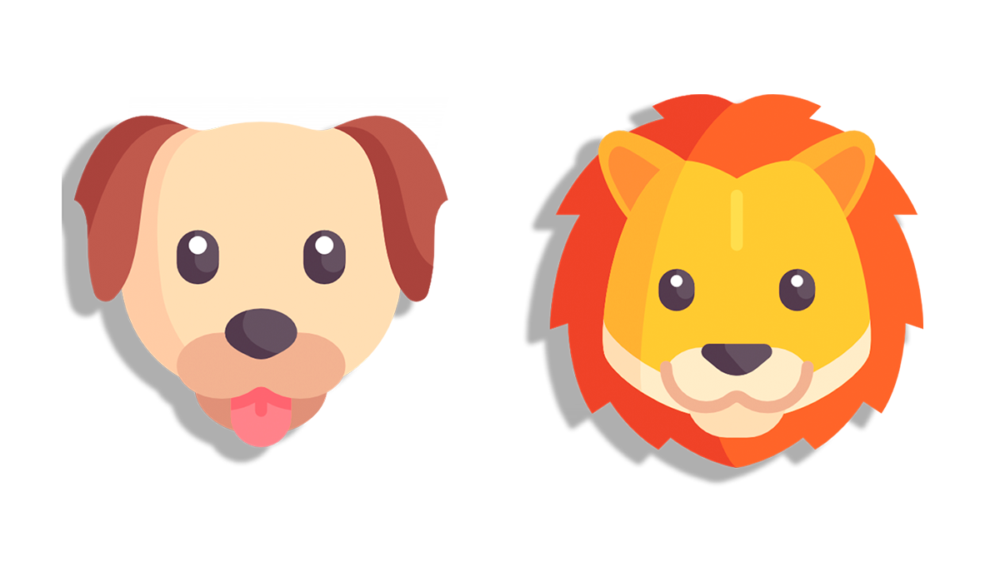
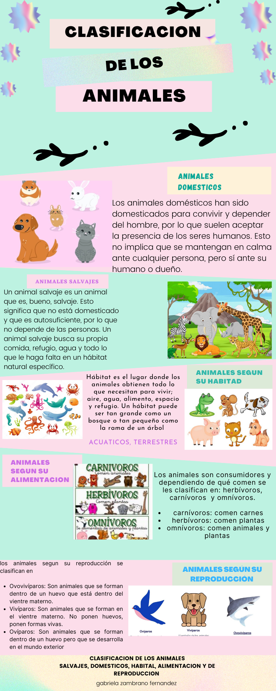
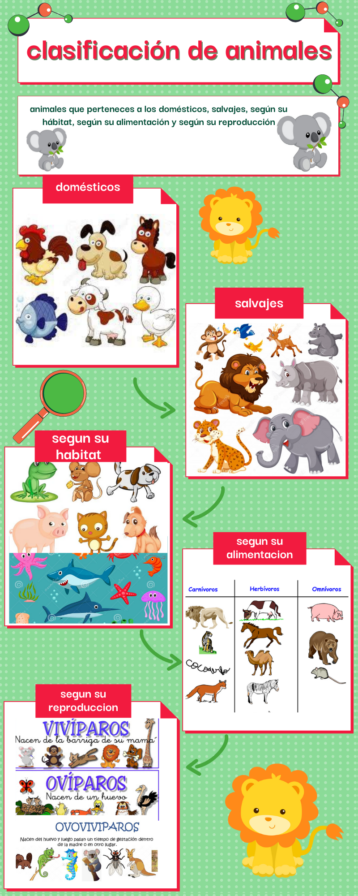

Conclusión
Conclusión:
Esta página web se ha diseñado para que los niños interactúen en ella.
Y conozcan acerca de la clasificación de los animales
También ayuda a que los niños conozcan y exploren un poco sobre cada especie de animales.
Pondrán jugar, ver vídeos explicativos.

Infografía

